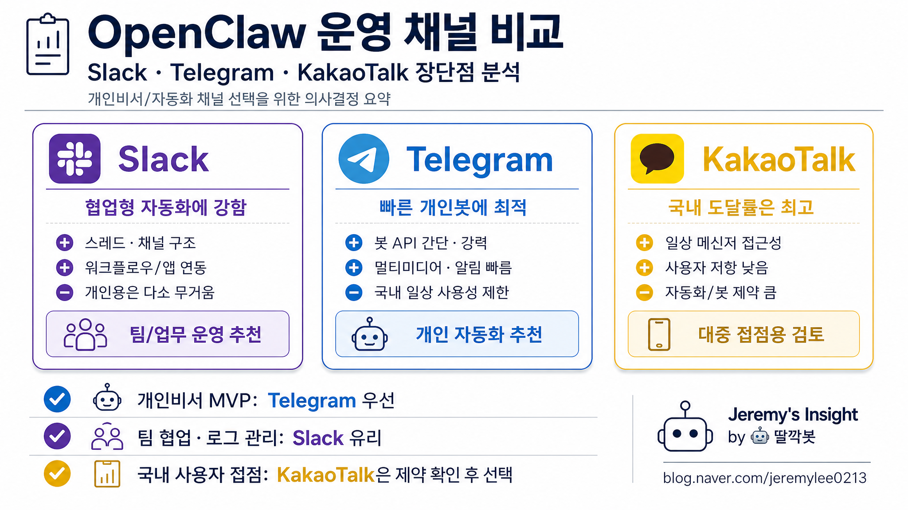

260504 오픈클로 메신저 채널 비교 보고서

핵심 결론
- 🚀 개인 자동화·빠른 호출은 Telegram이 가장 가볍고 안정적임
- 🧩 업무·팀 협업·기록 관리는 Slack이 압도적으로 유리함
- ⚠️ KakaoTalk은 국내 접근성은 최고지만 봇·자동화 자유도는 가장 제한적임
한 줄 판단
OpenClaw를 개인 비서처럼 쓰면 Telegram, 팀 업무 OS처럼 쓰면 Slack, 가족·지인 생활 접점까지 확장하려면 KakaoTalk이 유리하다. 다만 OpenClaw의 강점인 자동화·도구 호출·맥락 유지까지 고려하면, KakaoTalk은 “보조 알림 채널”에 가깝고 주력 채널은 Slack 또는 Telegram이 더 현실적이다.
비교 기준
- 호출성: 사용자가 봇을 부르고 응답받는 속도
- 자동화성: 워크플로우, API, 봇 권한, 외부 시스템 연동 난이도
- 맥락 관리: 스레드, 채널, 검색, 히스토리 보존성
- 생활 밀착도: 사용자가 실제로 자주 여는 앱인지
- 운영 리스크: 정책 변경, 권한 제한, 알림 피로, 개인정보 노출 가능성
채널별 장단점
| 채널 | 강점 | 약점 | OpenClaw 추천 용도 |
|---|---|---|---|
| Slack | 채널·스레드·검색·워크플로우가 강함. 업무 맥락을 구조화하기 좋음 | 개인 일상 메신저로는 무겁고, 무료/요금제 제약과 워크스페이스 관리 부담이 있음 | 업무 ToDo, 회의/프로젝트 로그, 팀 협업 자동화, 반복 브리핑 |
| Telegram | 봇 호출이 빠르고 가벼움. 이미지·파일·그룹봇 운영이 편함. 개인 비서 UX가 좋음 | 국내 일반 사용자 보급률은 카카오톡보다 낮고, 업무 구조화는 Slack보다 약함 | 개인 비서, 빠른 질의응답, 이미지 생성, 뉴스/날씨/리마인더 |
| KakaoTalk | 한국 사용자 도달률과 일상성은 최고. 가족·지인·고객 접점에 강함 | 공식 봇/자동화 자유도가 낮고, 정책·템플릿·채널 구조 제약이 큼 | 알림 수신, 고객/지인 접점, 아주 단순한 안내·확인 |
20년차 운영 관점 분석
Slack: “업무용 조종실”
Slack은 OpenClaw를 단순 챗봇이 아니라 업무 운영 시스템으로 쓰기에 가장 좋다. 채널을 프로젝트별로 나누고, 스레드로 의사결정을 묶고, List·Workflow·앱 연동을 붙이면 기록과 실행이 함께 남는다.
특히 반복 업무, 업무 ToDo, 프로젝트 상태 보고, 팀 단위 알림에는 Slack이 강하다. OpenClaw가 생성한 결과물을 사람이 검토하고 다시 지시하는 루프도 자연스럽다.
다만 Slack은 일상용 메신저라기보다 업무 공간이다. 개인 생활 자동화까지 모두 Slack에 넣으면 알림이 무거워지고, 워크스페이스 관리 비용이 생긴다.
Telegram: “개인 AI 비서 리모컨”
Telegram은 OpenClaw와 가장 가볍게 붙는다. 봇을 멘션하거나 DM으로 부르고, 이미지·파일·긴 메시지를 빠르게 주고받는 경험이 좋다. 개인 비서에게 “지금 바로 시켜서 바로 받는” 느낌을 만들기 쉽다.
뉴스 브리핑, 날씨, 이미지 생성, 간단한 메모, 리마인더, 개인 자동화에는 Telegram이 매우 효율적이다. 그룹에서도 봇을 선택적으로 부를 수 있어 실험과 운영이 쉽다.
약점은 구조화다. 업무 이력, 프로젝트별 논의, 장기 검색성은 Slack보다 떨어진다. 국내 모든 사람이 Telegram을 쓰는 것도 아니기 때문에 대중 접점으로는 한계가 있다.
KakaoTalk: “국내 생활 접점”
KakaoTalk은 한국에서는 도달률이 압도적이다. 사용자가 거의 매일 열고, 가족·지인·고객과 연결돼 있다. OpenClaw가 생활 알림이나 단순 확인 메시지를 보내는 채널로는 매력적이다.
하지만 자동화 관점에서는 제약이 크다. 공식 채널, 알림톡, 상담톡, 챗봇 구조는 개인 봇처럼 자유롭게 쓰기 어렵고, 정책·승인·템플릿·과금·사업자 요건이 붙을 수 있다.
따라서 KakaoTalk은 OpenClaw의 두뇌가 아니라 출력 말단으로 보는 편이 안전하다. 핵심 명령과 복잡한 자동화는 Slack/Telegram에서 처리하고, 꼭 필요한 생활 알림만 KakaoTalk으로 보내는 구성이 현실적이다.
추천 아키텍처
| 목적 | 1순위 채널 | 이유 |
|---|---|---|
| 개인 AI 비서 호출 | Telegram | 가장 빠르고 가볍고 멀티미디어 처리에 적합함 |
| 업무 자동화·ToDo·프로젝트 관리 | Slack | 채널·스레드·검색·워크플로우가 강함 |
| 가족/지인/국내 고객 알림 | KakaoTalk | 사용 습관과 도달률이 가장 높음 |
| 민감한 개인 맥락 처리 | Telegram DM 또는 제한된 Slack 채널 | 접근 범위를 통제하기 쉬움 |
| 공개/대중형 알림 | KakaoTalk 채널 또는 Slack/Telegram 공지방 | 수신자 성격에 따라 분리 필요 |
숨은 리스크와 반대 의견
| 리스크 | 설명 | 대응 |
|---|---|---|
| Slack 과잉 구조화 | 모든 개인 업무를 Slack에 넣으면 관리 피로가 커질 수 있음 | 업무/프로젝트만 Slack, 개인 호출은 Telegram으로 분리 |
| Telegram 맥락 흩어짐 | 빠른 대화는 좋지만 장기 프로젝트 기록 관리가 약함 | 중요한 결정은 Obsidian·Slack·GitHub Pages로 저장 |
| KakaoTalk 자동화 착시 | 사용자는 많지만 봇 자유도가 높다는 뜻은 아님 | 주력 자동화 채널로 보지 말고 보조 알림 채널로 한정 |
| 개인정보 노출 | 그룹방에서 민감정보가 출력될 수 있음 | 채널별 공개 범위와 답변 정책을 엄격히 분리 |
| 플랫폼 정책 변경 | API·봇 권한·요금 정책이 바뀌면 운영이 흔들릴 수 있음 | 핵심 로직은 OpenClaw 내부에 두고 채널은 교체 가능하게 설계 |
실무 권장안
- Telegram = 개인 조작 리모컨으로 둔다
빠른 질문, 이미지 생성, 리마인더, 개인 브리핑, 즉석 자동화에 사용한다.
- Slack = 업무 기록과 실행 보드로 둔다
ToDo, 프로젝트 진행, 워크플로우, 반복 보고, 팀 공유 자료를 모은다.
- KakaoTalk = 국내 생활 알림 출력 채널로 제한한다
복잡한 명령 실행보다 단순 알림·확인·고객 접점에만 쓴다.
최종 판단
OpenClaw 운영에서 가장 균형 잡힌 조합은 Telegram + Slack 병행이다. Telegram은 개인 비서 경험을 만들고, Slack은 업무 시스템 경험을 만든다. KakaoTalk은 한국 환경에서 매력적이지만, 자동화 자유도와 운영 제약 때문에 주력 엔진보다는 보조 알림 채널로 쓰는 편이 낫다.
Jeremy's Insight by 🤖 딸깍봇 https://blog.naver.com/jeremylee0213